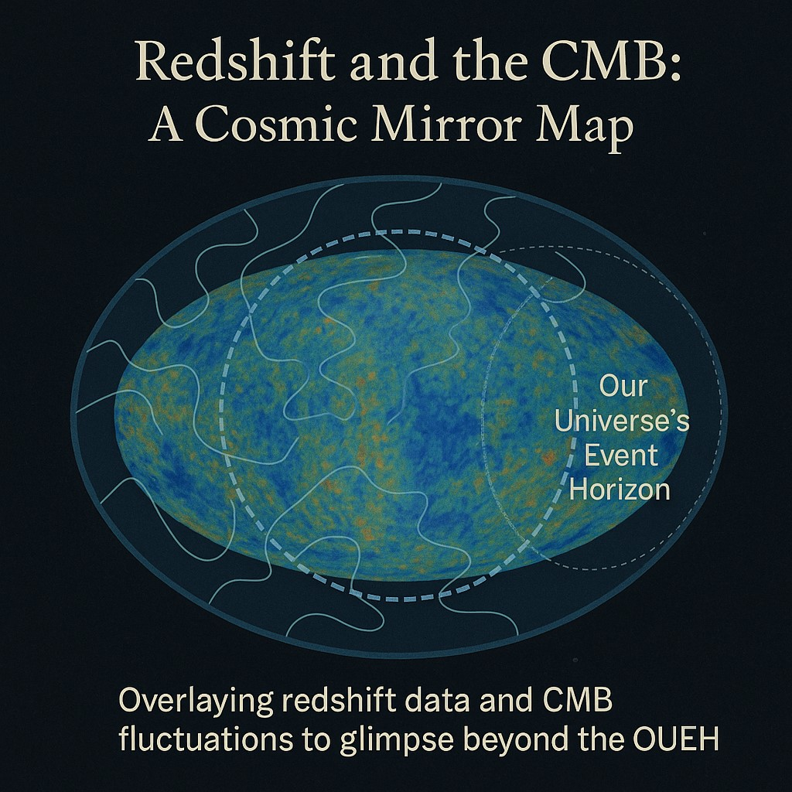
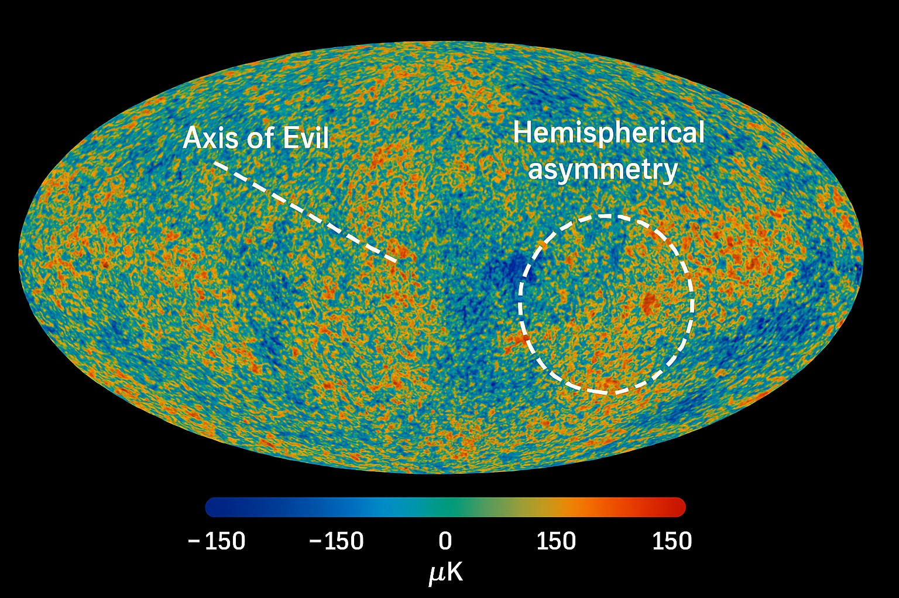
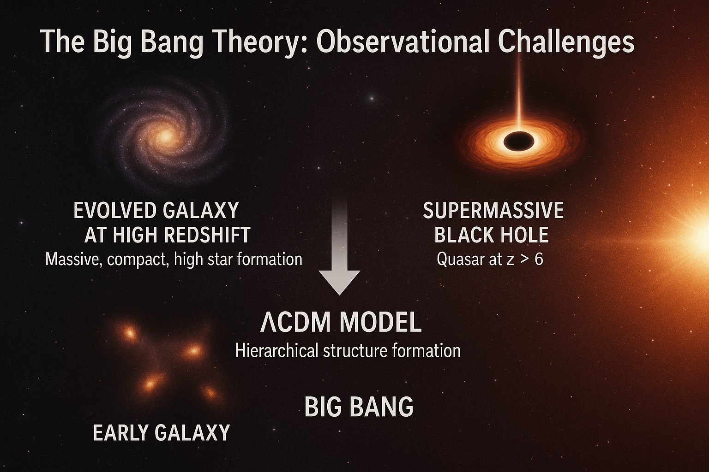
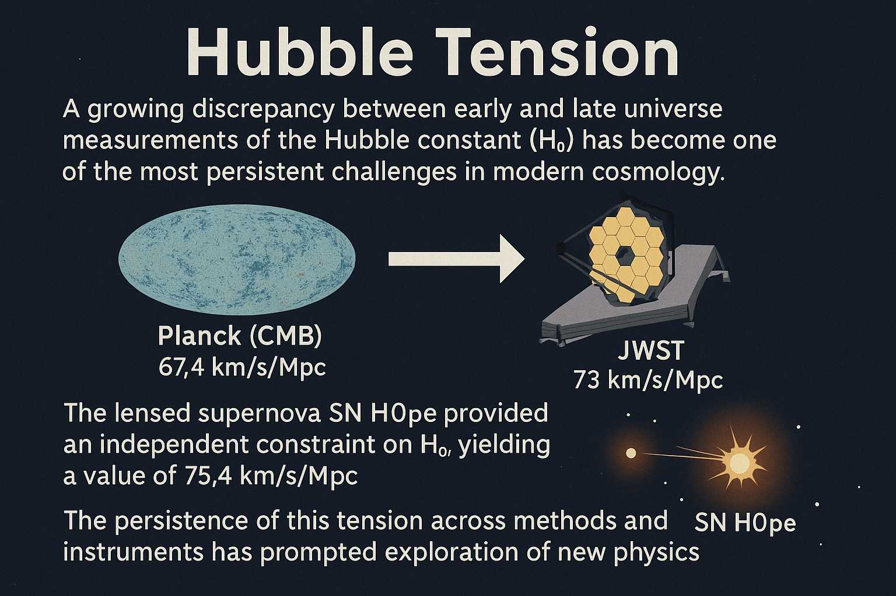

Independent research proposal
External Gravity Cosmology
Our Universe as a finite region inside a larger anisotropic (uneven) landscape — The Universe — with apparent expansion, redshift (light stretched toward longer, redder wavelengths), and CMB (cosmic microwave background — the faint microwave glow across the whole sky) features attributed to External Gravitational Forces beyond Our Universal Event Horizon (OUEH) (the farthest we can see), rather than a dark-energy field or a Big Bang singularity.
Three words for dark energy and cosmic expansion: gravity from mass concentrations beyond the OUEH — external to Our Universe, still inside The Universe. Pull from outside, not a push from inside.

If allowed, the data will take on its own shape like a fat man releasing his belt.
-
Landscape
The Universe (TU) (the larger whole) · Our Universe (OU) (the patch we can see, our visible universe of which we are in fact the center) · OUEH — a finite patch in a larger anisotropic landscape.
-
Agent
External Gravitational Forces as the unifying answer to dark energy and expansion.
-
CMB
Averaged mass-energy “hum” of intervening structure — forest-trunks analogy, not recombination relic heat.
-
Program
Directional checks, redshift structure, and neighbourhood mapping beyond the OUEH.
Sky motifs in the EGC program
Familiar maps and tensions, read through an uneven external landscape.




How the pieces fit
Core elements of the EGC framing, consistent with the Figshare short paper.
- Dark energy & expansion What looks like accelerating expansion is framed as motion on gravitational slopes toward uneven external masses. Acceleration can ramp as Our Universe closes on those masses (familiar inverse-square intuition), without inventing a repulsive field.
- High-z giants (JWST) JWST (James Webb Space Telescope) finds early massive galaxies and supermassive black holes; EGC reads them as older edge-dwellers near the OUEH — continuing structure in The Universe at our observational limit — not necessarily infants defying Eddington accretion inside a ~13.8 Gyr clock.
- CMB & redshift together The CMB is proposed as an averaged mass-energy background shaped by intervening curvature. A large-scale redshift-residual overlay is one proposed route for exploring that picture alongside other EGC motifs.
- Mapping beyond the horizon Directional redshift, CMB anomalies, and related tracers are tools to infer the “neighbourhood” of deep wells just outside the OUEH — structures we cannot image directly but may sense through their gravitational imprint.
- Anisotropy literature already in the EGC paper The Figshare short version cites large-scale quasar dipole (a sky pattern with opposite sides behaving differently) work (Secrest et al. 2021, CatWISE) and CMB multipole (sky patterns sorted by angular scale) anomalies as motivation for an uneven external landscape — consistent with EGC’s directional picture if confirmed, not presented here as finished proof of the model.
- Observational program Proposed checks draw on Planck (ESA mission that mapped the CMB), Pantheon+, SDSS/CatWISE, DESI/Euclid, JWST, and longer-term gravitational-wave surveys, building a broader roadmap from present-day maps toward future observatories.
At a glance
The argument in four beats — claim, significance, proposed check, then sources.
Claim
External Gravitational Forces, not a dark-energy field
Our Universe is a finite patch in The Universe. Apparent expansion and related features are attributed to masses beyond the OUEH — without a Big Bang singularity in this framing.
Why it matters
One agent for familiar phenomenology
If gravity outside the horizon can organise what we measure inside it, then dark energy and a singularity-first timeline are not mandatory interpreters of the same sky. That is a high-stakes interpretive alternative — still a proposal.
Evidence / proposal
Checks to pursue, not proofs asserted here
Suggested directions include further study of directional anisotropy and redshift structure, alongside the proposed redshift↔CMB overlay, and dipoles already discussed in the EGC paper’s cited literature, high-redshift timing for early galaxies and supermassive black holes, neighbourhood mapping beyond the OUEH, and longer-horizon gravitational-wave anisotropy. Favourable alignment would be consistent with EGC; discord would pressure it.
Reading
Primary deposits on Figshare
Start with the short-version DOI, then the structured overview and comparison pages on this site. Formal correspondence: tom@young01.xyz.
Explore
Start with concepts, then observational tests, working notes, and the draft CMB–redshift study.
-
01 · Start here
Concepts
Abstract, vocabulary (TU / OU / OUEH), and External Gravitational Forces.
-
02 · Tests
Observational tests
Proposed checks with Planck, Pantheon+, surveys, JWST, and longer-term GW.
-
03 · Notes
Working notes
Exploratory mathematical ideas (preliminary) and comparison with ΛCDM (Lambda Cold Dark Matter — the standard Big Bang + dark-energy model).
-
04 · Draft study
CMB ↔ redshift outline
Draft study outline with an explicit null hypothesis and falsification criteria.
Plain-English briefing
A plain-language summary of the EGC framing — explanatory, not new observational claims.
-
01
Our Universe inside The Universe
EGC does not begin with a Big Bang singularity. Our Universe (OU) is a finite, evolving region embedded in a larger — infinite or effectively infinite — anisotropic gravitational landscape: The Universe (TU). Masses beyond what we can see still tug on what we can, across Our Universal Event Horizon (OUEH).
-
02
Dark energy as external pull
What ΛCDM (Lambda Cold Dark Matter — the standard cosmological model) attributes to a dark-energy field, EGC attributes to External Gravitational Forces from mass concentrations outside the OUEH: pull from outside rather than a push from inside. Cosmic redshift is treated as an observed fact — not as a commitment to expansion, gravity-well climb, long travel, or tired-light. Whatever produces the redshift, its presence (and any directional pattern) is what EGC uses; it does not require a repulsive agent inside Our Universe.
-
03
CMB as averaged mass-energy “hum”
In this model the cosmic microwave background is not interpreted as relic heat from recombination (when the early plasma cooled enough for atoms to form and light to travel freely). It is proposed as a filtered radiative field — an averaged mass-energy background of intervening structure — shaped by curvature (analogous to standing in a forest: near trunks remain distinct; farther on, trunks fill every line of sight). Cold and warm patches are linked, in the proposal, to voids and denser regions.
-
04
Acceleration without anti-gravity
Apparent acceleration is framed as motion on a gravitational slope that can steepen as Our Universe closes on external masses — same mathematical role as dark energy in many fits, opposite physical interpretation. Uneven pulls match an uneven bubble and offer a way to think about features often discussed under “Hubble tension.”
Latest reading
Short Version — EGC
doi.org/10.6084/m9.figshare.29874398 — open on Figshare.
DOCX · Long FormExternal Gravity Cosmology — Long Form
Download the extended Long Form document.
PDF · research roadmapToward Testing EGC
Observational research directions (PDF).
Draft studyCMB ↔ redshift residuals
A focused empirical outline with an explicit null hypothesis and falsification criteria.
SourcesReading & citations
Figshare DOIs, a suggested reading order, and related literature pointers.
Short Version: PDF copy.